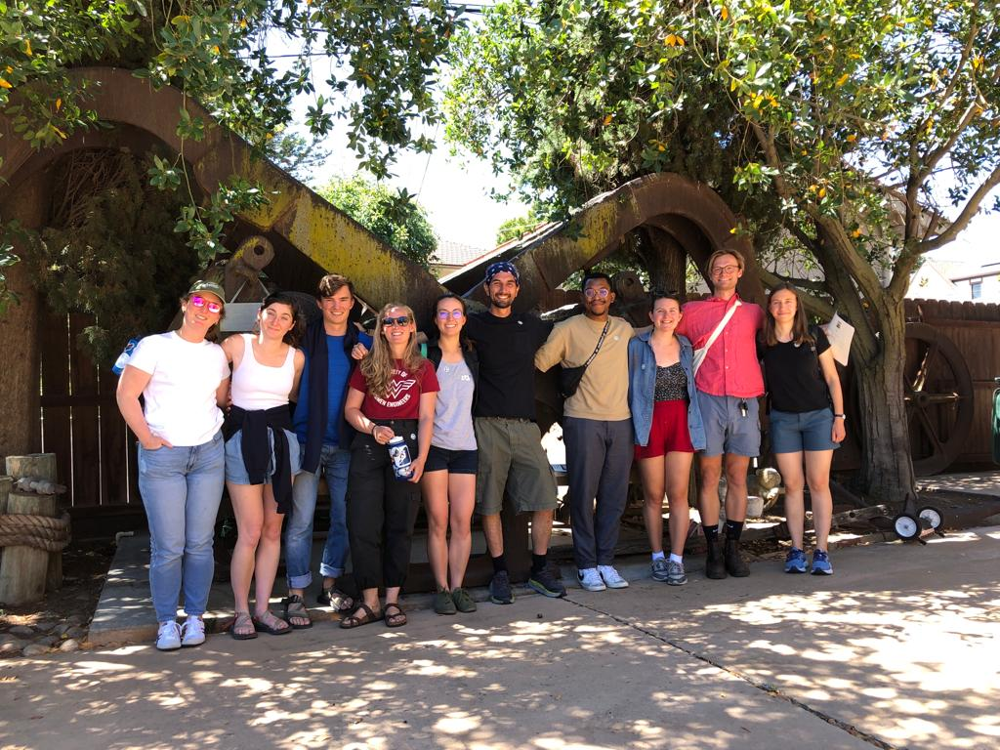

---
# Feel free to add content and custom Front Matter to this file.
# To modify the layout, see https://jekyllrb.com/docs/themes/#overriding-theme-defaults
title: Welcome
layout: base
---
Environmental Fluid Mechanics & Hydrology Group
UC Berkeley, Civil & Environmental / Mechanical Engineering
The Environmental Fluid Mechanics and Hydrology group at UC Berkeley uses numerical, observational, and theoretical tools to study the movement of water and air in the natural environment. Research interests include the coastal ocean and estuaries, the atmospheric boundary layer, surface and subsurface hydrology, water-ecosystem interactions, land-atmosphere interactions, numerical methods, turbulence, contaminant transport, groundwater flow, biological fluid mechanics, water resource sustainability, and the intersections of these and many other topics. These research areas are connected by their fundamental dependence on of fluid flows and dynamics.

Students in our group at the Dutra Dredging Museum in Rio Vista, California. July 2023.